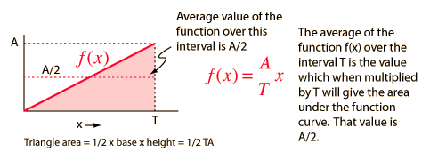
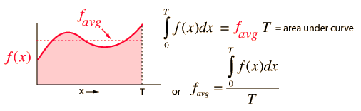
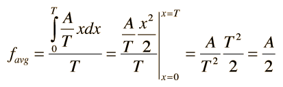

Average of a Function
If a function f(x) is a simple straight line of maximum value A on an interval T, then the average over an interval T is just A/2.

If the function is more complex, then you can apply the idea that the average value of the function favg multiplied times the interval T will be equal to the area under the function curve. This is where the idea of the integral becomes significant. The integral can be viewed as the area under the function curve.

The use of an integral to obtain the average of a function is a powerful and useful technique. It can be illustrated using the simple function above.

The integral used here is of the polynomial type.
|